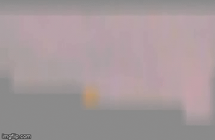
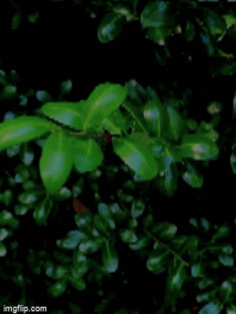
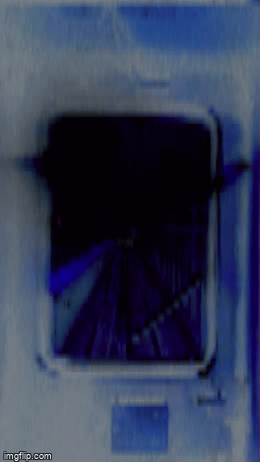

ice cave blues is an audiovisual composition in 8 parts floating between deep-space haze, pop, and shimmer. melancholic
daydream memories recorded in december 2020



If you would like to buy this project in physical media (tape / CD + printed artworks), write to me at garciawryan at gmail.
Proceeds allocated to fund food distribution and mutual aid in new york city.